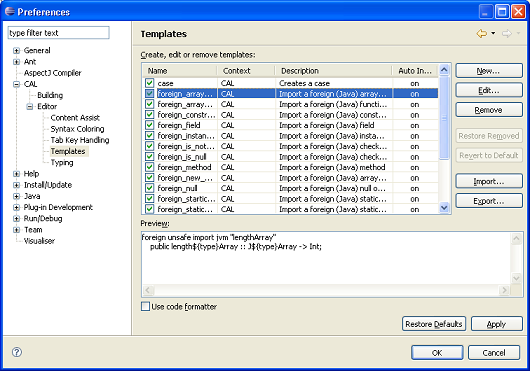

The CAL Eclipse Plug-in contributes several pages to the Preferences dialog:
Enable the CAL builder and control clean-up of output folders
Control smart caret positioning and highlighting of brackets
Control CAL Editor content assist preferences
Control fonts and colors used for CAL language elements
Choose whether to insert spaces or a TAB character when the Tab key is pressed
Create edit or remove code templates. This preference page is similar to the Java Template Preference Page (Java > Editor > Templates). Here you can create and edit code templates that are available in the CAL Editor when content assist is used.
|  |
Control options for automatically closing strings, bracket pairs and comments, etc.